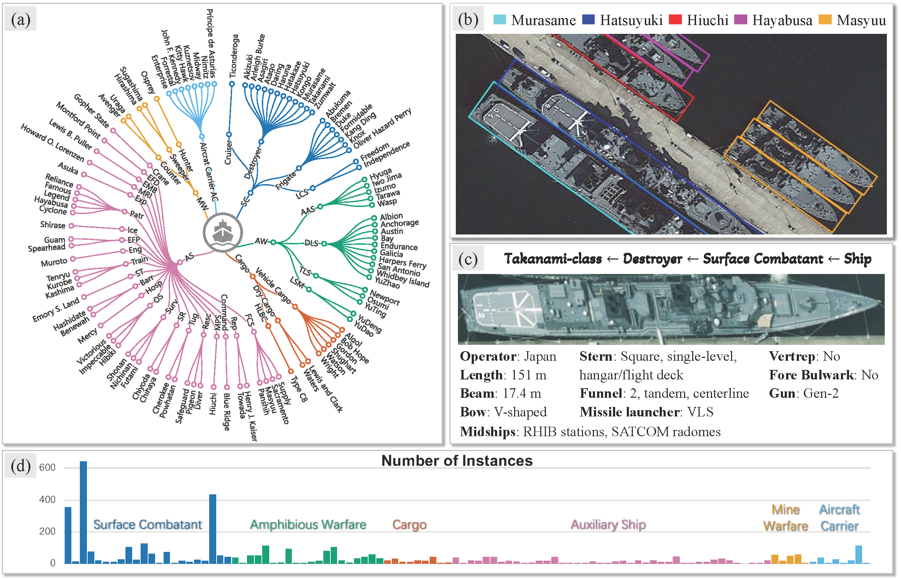
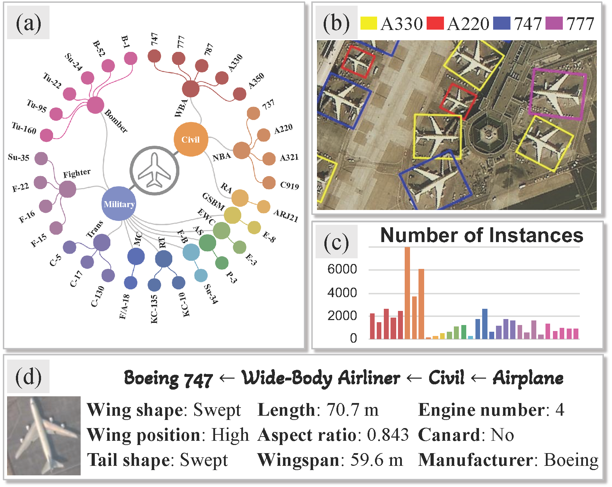

Overview
To facilitate model-specific aerial object detection, we focus on two representative object categories in aerial imagery, ship and aircraft, and construct two fine-grained object detection datasets, Pro-Ships and Pro-Planes. Unlike existing fine-grained datasets that often mix specific classes (e.g., Asagiri-class) with generic, unresolved sub-categories (e.g., Destroyer) at the same taxonomic level, our datasets introduce a carefully curated hierarchical taxonomy that organizes object models in a consistent and fine-grained manner. Within this taxonomy, Pro-Ships contains 106 ship models and Pro-Planes includes 30 airplane models, providing the most extensive coverage of model-specific categories among existing fine-grained aerial object detection datasets to date.
- The most extensive coverage of model-specific categories.
- Carefully curated hierarchical taxonomy.
- Fine-grained attribute annotations.
News
- [2026-05-11] Dataset homepage is released.
- [YYYY-MM-DD] Evaluation server is online.
- [YYYY-MM-DD] Dataset download links are available.
Dataset Information
This section describes the data sources, annotation protocol, hierarchical taxonomy, attribute annotations, and dataset splits of Pro-Ships and Pro-Planes.
Task Definition
The goal of this benchmark is model-specific aerial object detection. Given an aerial image, algorithms are required to detect all target objects and predict their rotated bounding boxes as well as their fine-grained model labels. Compared with conventional object detection that only recognizes coarse categories such as ship or airplane, this task requires distinguishing visually similar object models with subtle differences in size, style, and structure.
Pro-Ships

Data overview of Pro-Ships.
The images in Pro-Ships are collected from Google Earth imagery and selected images from existing datasets, including ShipRSImageNet, MCSD, and DOTA-v2, with spatial resolutions ranging from 0.1 m to 2 m. For the Google Earth imagery, ship instances are manually annotated with rotated bounding boxes and model-specific labels. For the selected images from existing datasets, the annotations are derived from the original labels and further refined.
In particular, instances in ShipRSImageNet are partially annotated with specific ship models, while others are labeled with unresolved generic categories such as other destroyer. Meanwhile, ship instances in MCSD are labeled with subcategory names such as destroyer, and instances in DOTA-v2 are labeled only at the coarse level of ship. We therefore refine these annotations by assigning model-specific ship labels to unresolved instances from ShipRSImageNet as well as those from MCSD and DOTA-v2. In addition, a portion of the original bounding boxes are horizontal or fail to tightly enclose objects, so we manually correct them into more accurate rotated bounding boxes.
Overall, Pro-Ships contains 1,953 images with 5,214 ship instances covering 106 ship models. The dataset is randomly split into training and test sets at a ratio of 4:1. The training set contains 1,563 images with 4,181 instances spanning 105 ship models, while the test set contains 390 images with 1,033 instances spanning 91 ship models.
Pro-Ships Taxonomy
Instead of treating each ship model as an independent flat category, we organize the 106 ship models into a four-level hierarchical taxonomy following publicly available ship classification schemes. The first level is the root category ship. The second level groups ships by operational roles into six categories: surface combatants (SC), amphibious warfare ships (AW), auxiliary ships (AS), aircraft carriers (AC), cargo vessels (Cargo), and mine warfare vessels (MW). The third level corresponds to more specific ship types under each operational role. For example, surface combatants are further divided into Cruiser, Destroyer, Frigate, and Littoral Combat Ship. The fourth level corresponds to specific ship classes, which constitute the model-level categories in the dataset, such as Akizuki-class, Arleigh Burke-class, and Asagiri-class.
Pro-Ships Attributes
For each ship class, we annotate 11 attributes derived from publicly available information. These attributes capture visual cues from three perspectives: absolute size cues, including overall length and beam; stylistic semantic cues, represented by the operator; and structural detail cues, including bow, stern, midships structure, funnel, fore bulwark, vertical replenishment point, gun type, and missile launcher type.
The attribute values include numerical measurements, binary indicators, categorical labels, and textual descriptors, providing rich auxiliary knowledge for fine-grained model discrimination.
Pro-Planes

Data overview of Pro-Planes.
The images in Pro-Planes are collected from existing datasets, namely MAR20 and FAIR1M-v2, with spatial resolutions ranging from 0.3 m to 1.1 m. We retain the original category annotations and directly adopt the official training and validation splits of MAR20 and FAIR1M-v2, which are merged into a unified dataset.
The resulting Pro-Planes dataset contains 6,192 training images with 28,216 instances and 4,567 validation images with 23,572 instances. Both splits cover 30 airplane model categories.
Pro-Planes Taxonomy
Similar to Pro-Ships, the 30 airplane models in Pro-Planes are organized into a four-level hierarchical taxonomy according to publicly available airplane classification schemes. The first level is the root category plane. The second level groups planes by usage into military (M) and civil (C). The third level further refines each branch into functional plane types. For example, the civil branch includes wide-body airliner, narrow-body airliner, and regional airliner. The fourth level corresponds to specific airplane models such as Airbus A330, Boeing 747, and COMAC C919.
Pro-Planes Attributes
For each airplane model, we annotate 9 attributes covering the same aspects as those in Pro-Ships, including absolute size cues, stylistic semantic cues, and structural detail cues. Specifically, the absolute size cues include wingspan, length, and aspect ratio; the stylistic semantic cue is represented by the manufacturer; and the structural detail cues include wing shape, wing position, engine number, canard, and tail shape.
Dataset Summary
| Dataset | Image Sources | Spatial Resolution | Images | Instances | Categories | Attributes |
|---|---|---|---|---|---|---|
| Pro-Ships | Google Earth, ShipRSImageNet, MCSD, DOTA-v2 | 0.1 m – 2 m | 1,953 | 5,214 | 106 ship models | 11 |
| Pro-Planes | MAR20, FAIR1M-v2 | 0.3 m – 1.1 m | 10,759 | 51,788 | 30 airplane models | 9 |
Dataset Statistics
The following statistics summarize the scale of Pro-Ships and Pro-Planes.
1,953
Pro-Ships Images
5,214
Pro-Ships Instances
106
Ship Models
11
Ship Attributes
10,759
Pro-Planes Images
51,788
Pro-Planes Instances
30
Airplane Models
9
Airplane Attributes
Dataset
Usage License
Target Categories
| Dataset | Root Category | Model Categories | Description |
|---|---|---|---|
| Pro-Ships | Ship | 106 | Model-specific ship detection in aerial images. |
| Pro-Planes | Plane | 30 | Model-specific airplane detection in aerial images. |
Download Links
| File | Description | Size | Download Link |
|---|---|---|---|
| Pro-Ships Training Set | Training images and annotations for Pro-Ships | To be updated | Download |
| Pro-Planes Training Set | Training annotations and formatting script for Pro-Planes | To be updated | Download |
| Taxonomy and Attribute Files | Hierarchical taxonomy and attribute annotations for Pro-Ships | To be updated | Download |
| Toolkit | Dataloader and evaluator based on MMRotate-1.x framework | To be updated | Download |
Evaluation
Submission Format
Please upload your detection results as a compressed file
(e.g., .zip) containing prediction files for all test images.
Each prediction should include the image identifier,
category label, confidence score, and rotated bounding box coordinates.
image_name category_name score x1 y1 x2 y2 x3 y3 x4 y4Evaluation Metrics
We adopt mean Average Precision (mAP) at an IoU threshold of 0.5 as the basic evaluation metric. Let i denote the i-th hierarchy level. We report two types of hierarchical mAP, namely the multi-level fine-grained mAP (mAPfi) and the multi-level coarse-grained mAP (mAPci).
| Metric | Definition |
|---|---|
| mAP@0.5 | Mean Average Precision at an IoU threshold of 0.5 over all model-specific categories. |
| mAPfi | Multi-level fine-grained mAP at the i-th hierarchy level. It evaluates model-specific detection performance. The score of a coarse category is computed as the mean AP over all its model-specific subclasses. |
| mAPci | Multi-level coarse-grained mAP at the i-th hierarchy level. It evaluates detection performance at the current semantic granularity by ignoring confusion among model-specific classes under the same ancestor category. A prediction is regarded as correct if the predicted class and the ground-truth class belong to the same category at the corresponding hierarchy level. |
Evaluation Server
Submit detection results and view evaluation reports through the online evaluation server. The leaderboard is available within the Evaluation Server.
The following table reports the performance comparison between general detectors and state-of-the-art fine-grained object detection methods on Pro-Ships and Pro-Planes datasets.
Pro-Ships
| Method | Publication | Backbone | Sch. | Ship | SC | AW | CG | AS | MW | AC | #Params. | GFLOPs |
|---|---|---|---|---|---|---|---|---|---|---|---|---|
| One-stage | ||||||||||||
| R. RetinaNet | TPAMI 2020 | Swin-T | 2× | 24.9 | 18.3 | 32.7 | 14.6 | 19.7 | 5.9 | 31.9 | 37.2 | 161.7 |
| R. FCOS | ICCV 2019 | Swin-T | 2× | 59.0 | 47.4 | 59.9 | 48.1 | 46.0 | 51.5 | 66.2 | 35.1 | 131.6 |
| R. ATSS | CVPR 2020 | Swin-T | 2× | 61.0 | 49.6 | 57.9 | 44.7 | 49.3 | 44.7 | 77.5 | 35.3 | 134.3 |
| R3Det | AAAI 2021 | Swin-T | 2× | 32.1 | 33.6 | 33.8 | 20.3 | 20.2 | 22.7 | 45.3 | 42.6 | 237.7 |
| S2A-Net | TGRS 2021 | Swin-T | 2× | 45.5 | 45.0 | 49.1 | 38.7 | 28.9 | 21.6 | 63.1 | 37.7 | 128.1 |
| R. GLIP | CVPR 2022 | Swin-T | 2× | 57.4 | 59.4 | 56.5 | 35.4 | 41.3 | 32.3 | 71.4 | 221.2 | 150.0 |
| OM (R. FCOS) | IGARSS 2025 | Swin-T | 2× | 60.8 (+1.8) | 56.3 | 56.0 | 48.2 | 44.2 | 45.2 | 81.8 | 35.3 | 134.4 |
| Transformer-based | ||||||||||||
| R. Deformable DETR | ICLR 2021 | Swin-T | 50e | 30.1 | 30.5 | 36.2 | 18.6 | 20.9 | 15.4 | 29.0 | 40.9 | 136.0 |
| RHINO | WACV 2025 | Swin-T | 2× | 63.8 | 63.8 | 55.5 | 46.5 | 50.7 | 36.4 | 68.5 | 51.0 | 193.0 |
| R. Grounding DINO | ECCV 2024 | Swin-T | 2× | 58.6 | 55.3 | 50.7 | 50.0 | 44.3 | 40.1 | 72.7 | 164.9 | 152.0 |
| Two-stage | ||||||||||||
| R. Faster R-CNN | TPAMI 2016 | Swin-T | 2× | 61.9 | 57.6 | 56.9 | 51.9 | 48.7 | 21.0 | 75.9 | 44.4 | 138.0 |
| Oriented R-CNN | ICCV 2021 | Swin-T | 2× | 79.3 | 79.8 | 69.6 | 68.6 | 58.9 | 41.8 | 93.7 | 44.5 | 138.2 |
| ReDet | CVPR 2021 | ReR50 | 2× | 68.5 | 69.7 | 67.0 | 56.9 | 50.4 | 50.1 | 59.7 | 30.8 | 60.5 |
| Gliding Vertex | TPAMI 2021 | Swin-T | 2× | 62.1 | 58.0 | 50.7 | 57.2 | 48.0 | 50.2 | 71.4 | 44.5 | 138.2 |
| EQLv2 (Oriented R-CNN) | TPAMI 2023 | Swin-T | 2× | 60.3 (-19.0) | 62.2 | 57.2 | 41.3 | 51.5 | 26.8 | 37.1 | 44.5 | 138.1 |
| LogN (Oriented R-CNN) | IJCV 2024 | Swin-T | 2× | 71.9 (-7.4) | 70.5 | 70.0 | 62.5 | 50.5 | 48.9 | 83.3 | 44.5 | 138.2 |
| R. HiCLPL (R. Faster R-CNN) | ACMMM 2022 | Swin-T | 2× | 16.1 (-45.8) | 9.7 | 21.3 | 12.9 | 10.2 | 6.5 | 34.3 | 46.7 | 138.2 |
| ISCL (Oriented R-CNN) | TGRS 2022 | Swin-T | 2× | 76.4 (-2.9) | 80.3 | 65.9 | 71.1 | 53.8 | 44.3 | 89.8 | 58.2 | 152.7 |
| PETDet (Oriented R-CNN) | TGRS 2023 | Swin-T | 2× | 76.7 (-2.6) | 79.4 | 67.4 | 55.6 | 57.6 | 61.7 | 79.3 | 46.2 | 133.0 |
| PCLDet (Oriented R-CNN) | TGRS 2023 | Swin-T | 2× | 78.4 (-0.9) | 80.4 | 66.0 | 63.7 | 58.0 | 58.5 | 89.8 | 46.0 | 139.8 |
| OM (Oriented R-CNN) | IGARSS 2025 | Swin-T | 2× | 77.9 (-1.4) | 79.2 | 67.7 | 55.6 | 57.6 | 61.7 | 79.3 | 45.6 | 138.2 |
| EagleVision (Oriented R-CNN) | arXiv 2025 | Swin-T | 3× | 64.5 (-14.8) | 61.1 | 63.4 | 59.3 | 46.0 | 37.4 | 75.7 | 669.0 | 142.0 |
| Ours | ||||||||||||
| ExpertDet (R. ATSS) | - | Swin-T | 2× | 63.0 (+2.0) | 54.0 | 55.8 | 48.4 | 50.4 | 54.5 | 75.9 | 34.2 | 134.3 |
| ExpertDet (ReDet) | - | ReR50 | 2× | 70.9 (+2.4) | 69.2 | 67.1 | 60.4 | 52.3 | 55.2 | 70.4 | 31.0 | 60.5 |
| ExpertDet (Oriented R-CNN) | - | Swin-T | 2× | 82.5 (+3.2) | 81.1 | 68.5 | 68.5 | 63.4 | 60.3 | 93.9 | 44.6 | 138.2 |
Pro-Planes
| Method | Airplane | Military | Civil |
|---|---|---|---|
| One-stage | |||
| R. RetinaNet | 58.5 | 72.5 | 30.6 |
| R. FCOS | 61.9 | 76.9 | 31.8 |
| R. ATSS | 62.6 | 77.6 | 32.8 |
| R3Det | 56.5 | 71.6 | 26.4 |
| S2A-Net | 62.6 | 79.6 | 28.7 |
| R. GLIP | 58.4 | 72.4 | 30.3 |
| OM (R. FCOS) | 64.2 (+2.3) | 80.5 | 31.7 |
| Transformer-based | |||
| R. DeformableDETR | 51.8 | 65.0 | 25.6 |
| RHINO | 60.0 | 76.2 | 27.8 |
| R. Grounding DINO | 59.3 | 74.7 | 28.3 |
| Two-stage | |||
| R. Faster R-CNN | 61.1 | 78.6 | 26.3 |
| Oriented R-CNN | 66.4 | 84.7 | 29.8 |
| ReDet | 67.9 | 85.7 | 32.4 |
| Gliding Vertex | 57.7 | 73.9 | 25.4 |
| EQLv2 (Oriented R-CNN) | 66.1 (-0.3) | 85.1 | 28.2 |
| LogN (Oriented R-CNN) | 64.4 (-2.0) | 83.5 | 26.3 |
| R. HiCLPL (R. Faster R-CNN) | 59.2 (-1.9) | 75.3 | 26.9 |
| ISCL (Oriented R-CNN) | 65.1 (-1.4) | 82.2 | 30.8 |
| PETDet (Oriented R-CNN) | 63.1 (-3.3) | 79.5 | 30.4 |
| PCLDet (Oriented R-CNN) | 66.3 (-0.1) | 84.3 | 30.2 |
| OM (Oriented R-CNN) | 63.5 (-2.9) | 79.2 | 31.9 |
| EagleVision (Oriented R-CNN) | 66.3 (-0.1) | 84.1 | 30.6 |
| Ours | |||
| ExpertDet (R. ATSS) | 64.9 (+2.3) | 80.5 | 33.8 |
| ExpertDet (ReDet) | 68.8 (+0.9) | 86.1 | 34.1 |
| ExpertDet (Oriented R-CNN) | 67.4 (+1.0) | 85.7 | 30.7 |